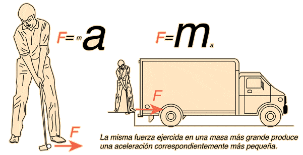

Siempre que una fuerza (o varias) no valanceadas actuan sobre un cuerpo, se produce una aceleracion en la direccion de la fuerza que es directamente proporcional a la fuerza e inversamente proporcional a la masa.
La segunda ley de Newton calcula los newtons que hacen falta
para que algo estático pase a estar en movimiento.
La Tierra cuenta con una aceleración constante de 9,8 metros por segundos provocados por la gravedad.
Es decir, un objeto de 100 kilos necesitará de una fuerza superior a 980 newtons para entrar en movimiento.
Como tal, no es algo que vayamos a calcular en nuestro día a día, ya que primero necesitaríamos saber cuántos
newtons somos capaces de ejercer con nuestra fuerza.
Pero en realidad, la segunda ley de Newton ha servido para entender el mundo que nos rodea.
No solo en la Tierra, sino que se puede llevar a otros lugares del universo,
siendo muy útil a la hora de comprender por qué los planetas giran en torno a otros astros o cuánta energia hace.

FORMULAS Y EJEMPLOS
p= m.g Calcular la masa de un cuerpo cuyo peso es de 980N. , convertir la formula de la sig manera: m=p/g= m=980/9.8 m=100kg
p= f/g.a Calcular la fuerza neta que deba aplicarse a un cuerpo cuyo peso es de 400N para que adquiera una aceleracion de 2m/s2: convertir la formula de la sig. manera: f=p.g/a f=400.9.8/2 f=1960N
a=F/m Determinar la fuerza que recibe uncuerpo de 30kg, la cual le produce una aceleracion de 3m/s2: convertir la formula de la sig manera= f=m.a f=30.3 f=90N
FT=suma de todas las fuerzas calcular ft , si tenemos f1=30N, F2=20N= ft=f1+f2 ft=30+20 ft=30N